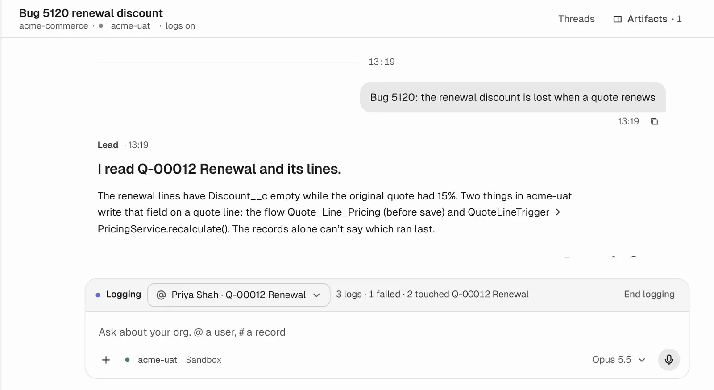
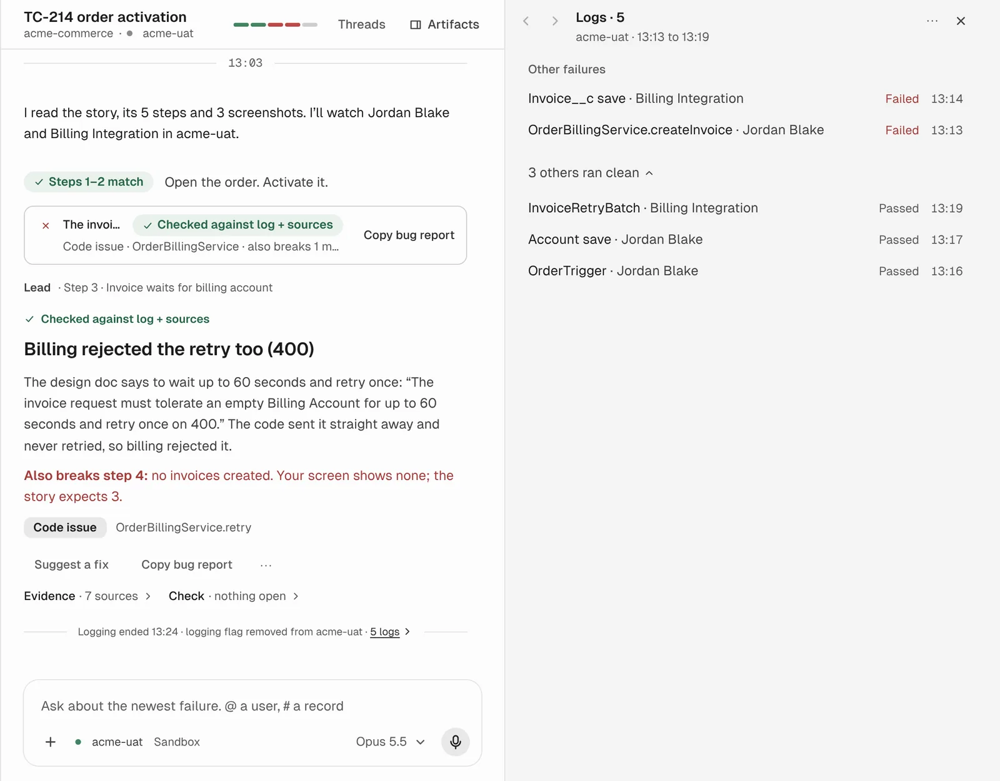
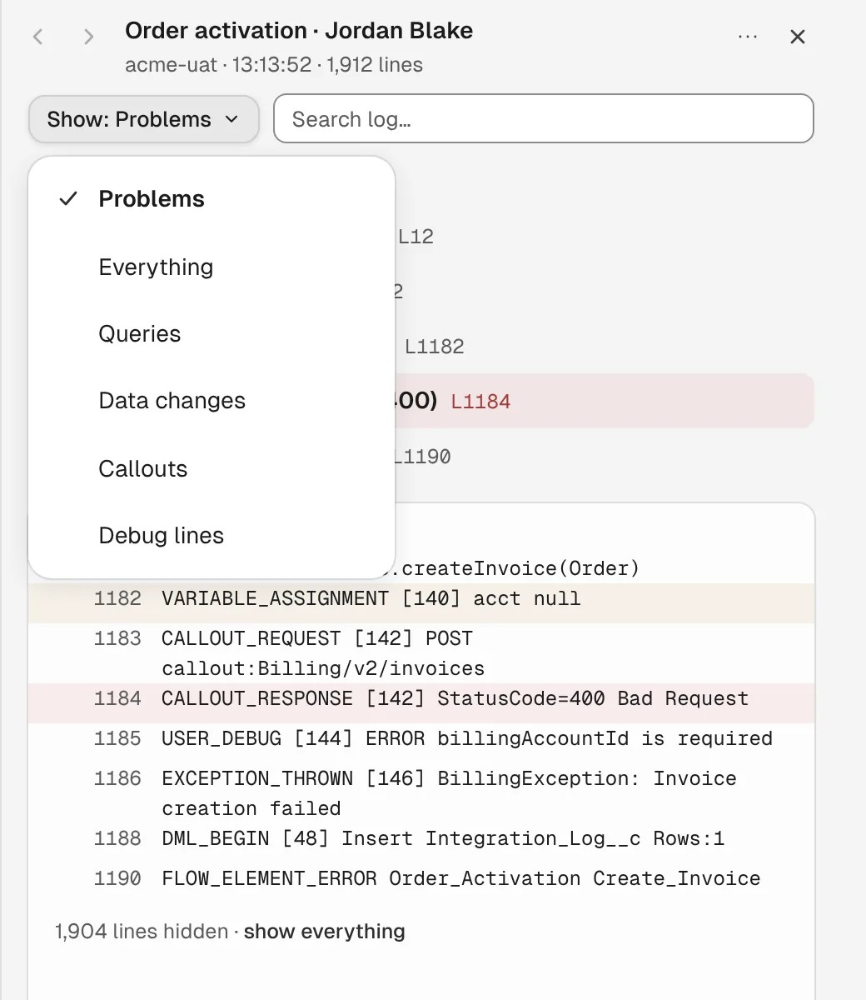
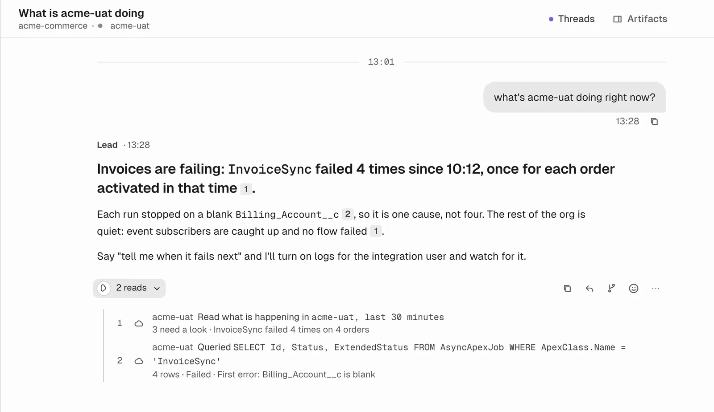
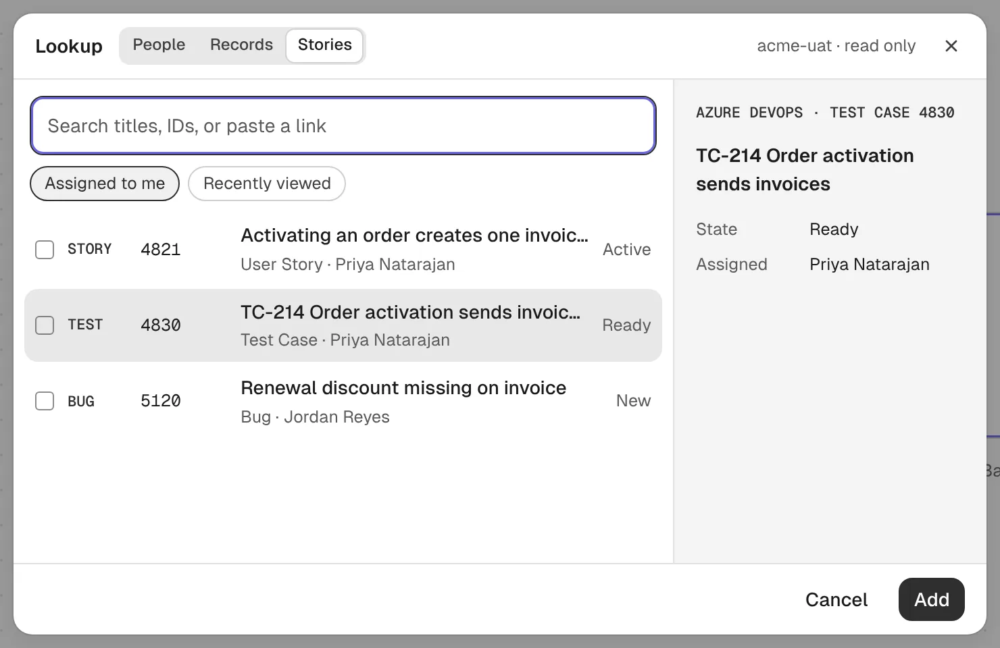
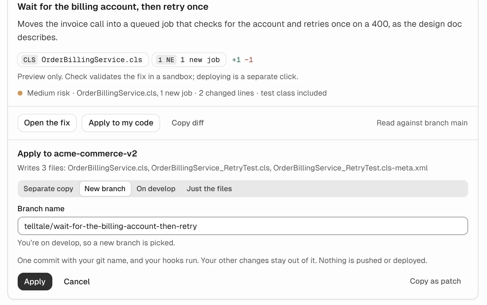
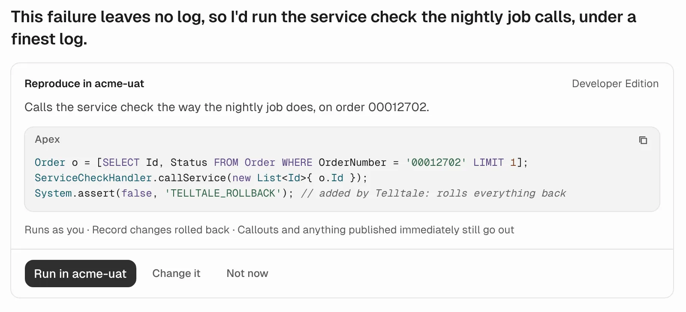
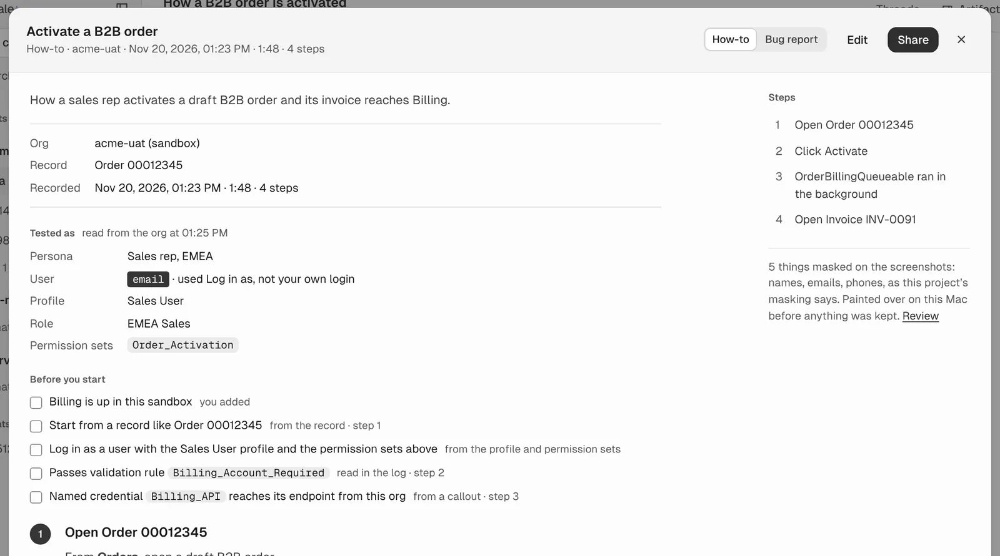
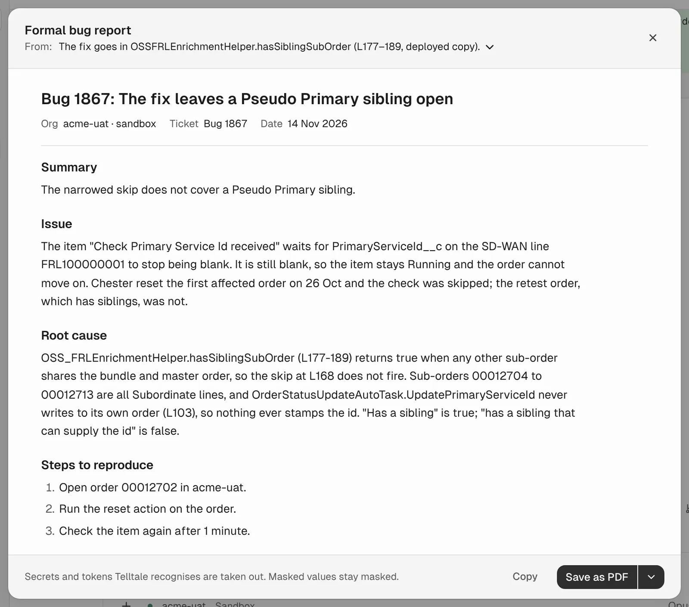
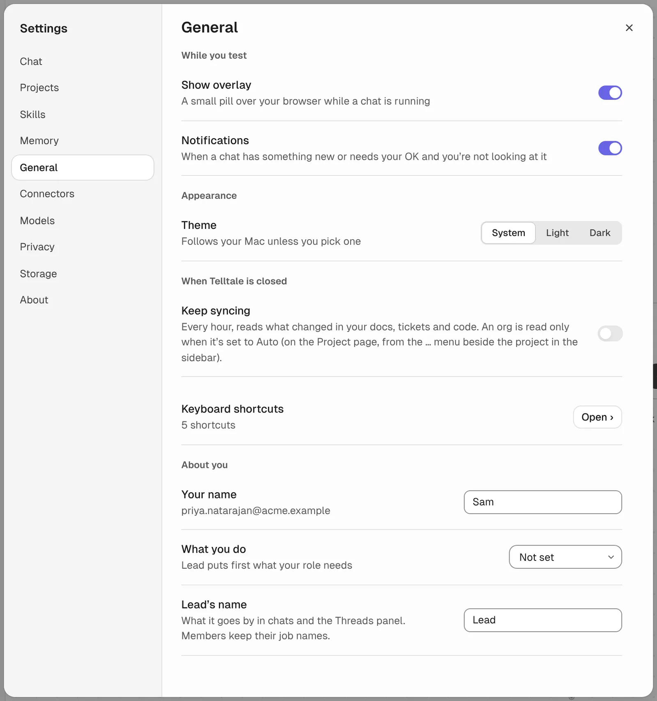

Guide · 3 of 5 · What it can do
Written for Beta 1.8.1
What it can do
Ten jobs, each in a few lines. Each one says what you need before you start.
1Debug a failure live
Choose Debug live, or leave Pick for me on. Telltale turns on logs for the person you name and reads each log as it arrives. You reproduce the problem in your browser, and your lead explains each failure as it lands. Choose End logging when you are done.

You need: a signed-in org, and a Salesforce user who can turn on debug logs. Production asks first.
2Collect logs for a longer run
Choose Collect logs when the problem takes a while to show up. Telltale asks how long logging should stay on: 1 hour, 4 hours or until tomorrow morning. Salesforce switches it off by itself, and a day is the most it allows. When you stop, you get one write-up.

You need: a signed-in org and a user who can turn on debug logs.
3Read a log you already have
Drop a .log file into a chat and your lead reads it. Open any log, then use Show to pick Problems, Everything, Queries, Data changes, Callouts or Debug lines. Use Search log to find a word. Click a line, or drag over several, and press Return or Ask to quote it into the reply box.

You need: a .log file. A log file on its own cannot turn logging on.
4Ask your org anything
Ask about records, who can see or edit something, flows and Apex that touch a field, or what changed recently. Your lead reads the org, your code, your tickets and your docs, and answers with the evidence under it. The Reads pill shows whether it Asks first or is set to Auto.

You need: a signed-in org. In production, and in any org Telltale cannot confirm, every read asks first.
5Bring in tickets and docs
Connect Jira, Azure DevOps, ServiceNow, Confluence, GitHub or Bitbucket. Then paste a story link or a ticket number, and your lead reads it. Type @ for a person, a field or a class, and # for a record or a ticket. Open Lookup to browse. Chat tools such as Slack come in as custom connectors.

You need: the connector signed in under Settings, then Connectors. Each one asks only for what it needs.
6Fix it
Choose Suggest a fix under an answer. You get the changed lines, the risk and a test that should fail now. Apply to my code writes the files on a new branch in your folder, and nothing is pushed. Check in a sandbox compiles it and runs the tests, and changes nothing in the org. Deploy and Put back work only on your click, and only in a sandbox, a Developer Edition or a scratch org. Carry to branches tries the fix on your other branches.

You need: a project with its repo. Check and Deploy also need a non-production org.
7Reproduce it safely, and one-call actions
Sometimes a failure leaves no log. Your lead can propose a Reproduce card with the exact code it would run. You read it, then choose Run. Everything it changes is rolled back. Callouts and anything published immediately still go out.
A one-call action is different. It runs one named call in your org, or a short piece of Apex, and it changes data and can't be undone. The ask says so, shows the exact code and waits for your click.

You need: a non-production org. Neither one ever runs in production.
8Record a process
Choose Record a process, then click through the steps in Salesforce the way you normally would. Telltale records only your org's Salesforce browser window and paints over private values. When you are done, you get a step-by-step doc with masked screenshots. You can cut a part, add marks, and save it as a how-to or a bug report.

You need: Screen Recording allowed for Telltale, a browser it can see (Chrome, Edge, Brave, Arc or Safari), and Telltale running from Applications.
9Share it
Once a chat has an answer, Share lets you export the chat as PDF, Word or Markdown. Formal bug report writes a summary, the issue, the root cause, steps to reproduce and the fix, ready for a ticket. You can copy it or save it. Secrets Telltale recognises are taken out, and names in the timeline are hidden.
To reply in a chat tool, ask your lead to Draft a reply. You get a draft card, and nothing is sent until you choose Send. Auto-send is off unless you allow it, and it always waits five seconds with a Cancel first.

You need: an answer in the chat. Replies also need a chat tool connected as a custom connector.
10Make it yours
Rename your lead in Settings, then General, under Lead's name. In Chat, pick how it talks: brief or detailed, direct or step by step. Memory keeps short notes about you and your projects while you work, and you can edit or forget any of them. Skills teach it your way of doing things. Use the mic beside Send to talk instead of typing.

You need: nothing extra. The mic asks for Microphone permission the first time.